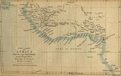
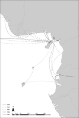

Static archive of a former Omeka site (snapshot 2026-11-24). Search and interactive features are not available.
Skip to main content
Data literacy (Frühling 2020)
Start
Forumsdiskussionen über Moderation
RETURNING TO DOFUS
RIGHTS TO PLACE PRISMES
HALLO MODS!
HANDEL-SACHEN WEG
STOP LE BENEVOLAT
MUTE INCOMPRÉHENSIBLE
Reflexion
Drucke aus Japan
Japanische unbegrenzte Flächenmuster
Bailei Skizzenbuch: Vogelbilder
Reflexion
Kinderhexenprozesse im Kanton Bern und in der Waadt 1441-1678
Jaggatlin
Wälscher Knabe
Stäffan Öler
Michel Schnÿder
Frantz N.
Claude Clot
Jung Knab
Reflexion
Gustav Mann
Sammlung
Titel
Gustav Mann
Objekte
von 1
1–12 von 12
Erweiterte Suche
Titel
Identifikator
Erstellt
Date (numeric:interval)
Date (numeric:timestamp)
Geburtsdatum (numeric:timestamp)
Sterbedatum (numeric:timestamp)
Aufsteigend
Absteigend
Sortieren
G. Mann, Letter to Hooker [English Translation], West Africa Niger Expedition, Feb 27th 1862_Transcription
Gustav Mann Home
G. Mann, Letter to Hooker, West Africa Niger Expedition, Oct 27th 1862_Transcription
G. Mann, Letter to Hooker, Cameroon River, Jan 29th 1863_Transcription
G. Mann, Letter to Hooker, West Africa Niger Expedition, Apr 30th 1862_Transcription
UniBe Logo
Gustav Mann
"West Coast of Africa from the Cape Verd Islands to the Congo River, Illustrating the Botany of the Niger Expedition"

Marmocchi, Francesco C., "La Guinea"
"The Southern Slope of Mount Cameroon" (1885)
"Gustav Mann’s Travel Routes between Europe and the Gulf of Guinea, 1859-1863"
"Gustav Mann’s Travel Routes in West Africa, 1859-1863"

von 1
1–12 von 12